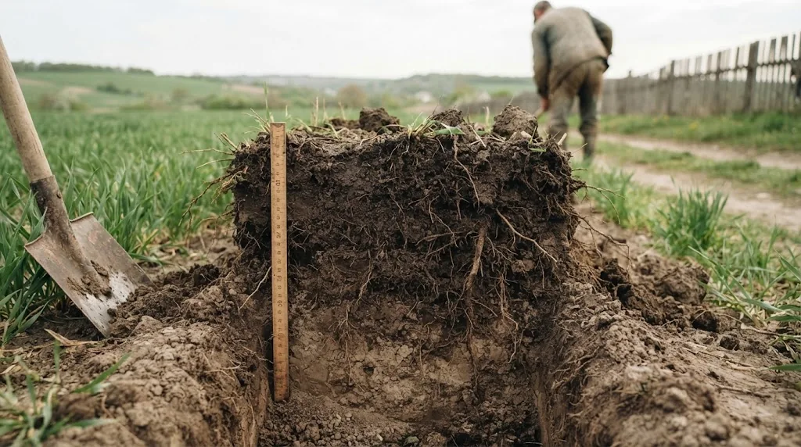

Коротко
- pH показує, наскільки ґрунт кислий чи лужний. 7 — нейтрально, нижче — кисло, вище — лужно.
- Шкала логарифмічна: ґрунт з pH 5 у 10 разів кисліший за ґрунт з pH 6.
- Багато культур найкраще ростуть при pH 6,0–7,0. На кислому ґрунті гірше засвоюються фосфор, кальцій і магній, на лужному — фосфор, залізо, мідь і цинк.
- Спершу виміряйте pH, потім вносьте добрива чи розкислювач. Інакше частина грошей піде в нікуди.
Що таке pH ґрунту
pH ґрунту вимірює концентрацію іонів водню в ґрунтовому розчині. Шкала йде від 0 до 14, нейтральне значення 7. Усе, що нижче, вважають кислим, усе, що вище, лужним.
Є один підводний камінь: шкала логарифмічна. Різниця в одну одиницю означає десятикратну різницю в кислотності. Ґрунт з pH 5 у десять разів кисліший за ґрунт з pH 6, а pH 4 це вже в сто разів кисліше, ніж pH 6. Тому «трохи нижче норми» на папері може означати серйозну проблему в полі.

| pH | Реакція ґрунту | Що відбувається |
|---|---|---|
| нижче 5,5 | кисла | Гірше засвоюються фосфор, кальцій і магній. Зростає вміст рухомого алюмінію і марганцю, які шкодять кореням. Слабшає життя корисних бактерій. |
| 5,5–6,5 | слабокисла | Підходить для багатьох культур, зокрема для картоплі. |
| 6,5–7,5 | нейтральна | Найкраще доступні основні елементи живлення. Комфортна зона для багатьох культур. |
| вище 8,0 | лужна | Фосфор, залізо, мідь і цинк переходять у форми, які рослині важко взяти. |
Чому кислотність впливає на врожай
Рослина бере поживні речовини з ґрунтового розчину, а pH вирішує, у якій формі вони там лежать. Ви можете внести правильну норму добрива, і воно все одно не спрацює, якщо елементи зв’язалися в нерозчинні сполуки.
Приклад з Полісся. Дерново-підзолисті та торф’яно-підзолисті ґрунти там мають pH 4,2–5,2 (дані виробника). У багаторічному досліді на дерново-підзолистому ґрунті pH сольової витяжки становив 4,6–4,8. Вапнування підняло його до 6,1–7,6, а за вісім років ґрунт знову підкислився до 4,9–6,5. Приріст врожаю від вапнування в тому досліді сягав 42% для озимої пшениці й до 120% для кормового буряку. Тобто вапнування працює, але його треба повторювати.
Проблема зачепила й центральні регіони. Чорноземи, які колись мали pH близько 7, у ряді господарств опустилися нижче 6, у тому числі через роки внесення азотних добрив. Протилежна історія на півдні: в посушливих районах Одещини, Миколаївщини та Херсонщини при зрошенні і надмірних дозах мінеральних добрив ґрунт засолюється й лужніє.
Як дізнатися свій pH
Є три шляхи: цифровий pH-метр, тест-набір і лабораторний аналіз. Точність і ціна у них різні, а вибір залежить від того, яке рішення ви збираєтеся приймати. Детально розписано в статті «Як виміряти pH ґрунту».
Що робити з кислим і лужним ґрунтом
Кислий ґрунт розкислюють: вапняком, доломітовим борошном, дефекатом або меліорантами. Лужний підкислюють торфом, сіркою чи спеціальними добривами. Засолений ґрунт потребує промивання, дренажу і відновлення структури.
Головне правило таке: розрахунок дози тільки за результатами виміру, внесення заздалегідь, контрольний замір через рік. Усе докладно в статті «Як розкислити або підкислити ґрунт».
Окремо про вибір культур: якщо pH змінити неможливо або дорого, підберіть культуру під ґрунт, а не навпаки. Для цього є таблиця оптимальних значень pH.
Часті запитання
Що таке pH ґрунту простими словами?
Це число, яке показує кількість іонів водню в ґрунтовому розчині. Чим воно менше 7, тим ґрунт кисліший, чим більше 7, тим лужніший. На практиці ґрунти мають pH від 4 до 9.
Який pH ґрунту найкращий?
Для більшості польових і овочевих культур 6,0–7,0. Є й винятки: картопля добре росте при 4,5–6,0, лохина потребує 4,5–5,5. Таблицю по культурах дивіться в окремій статті.
Чи впливають мінеральні добрива на кислотність?
Так. Тривале внесення азотних добрив, особливо аміачних форм, поступово підкислює ґрунт. Тому pH варто контролювати, навіть якщо раніше ґрунт був нейтральним.
Скільки разів на рік міряти pH?
На полі достатньо раз на кілька років та після змін в удобренні чи вапнуванні. На невеликих ділянках і в теплицях зручно перевіряти щороку, перед сезоном.
Директор НВ ТОВ «СІНТА», розробник органічних добрив ТМ GREENODIN.
Опубліковано 12 жовтня 2026. Оновлено 12 жовтня 2026.
Джерела
- Polovyi V. M., Yashchenko L. A., Holub S. M., Kutuza D. M. Врожайність традиційних культур Полісся залежно від динаміки обмінної кислотності дерново-підзолистого ґрунту при різних нормах CaCO₃. Вісник НУВГП, серія «Сільськогосподарські науки», 2024, вип. 4(108)
- Soil Acidity and Liming. UMass Extension (США)
- Інструкції із застосування добрив ТМ GREENODIN, НВ ТОВ «СІНТА» (дані виробника)